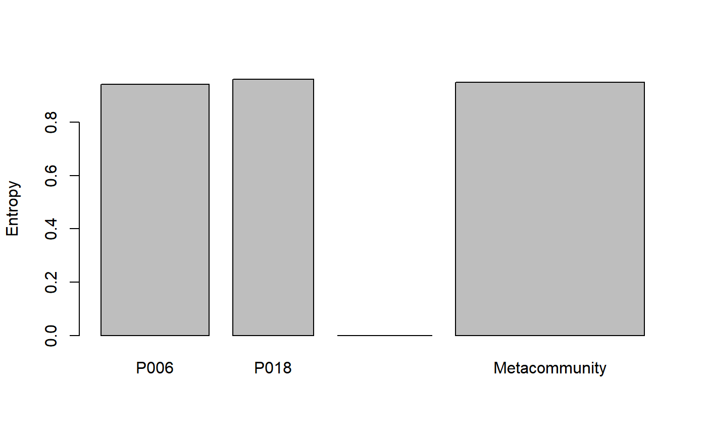

AlphaEntropy.RdCalculates the reduced-bias total alpha entropy of order \(q\) of communities.
AlphaEntropy(MC, q = 1, Correction = "Best", Tree = NULL, Normalize = TRUE, Z = NULL, CheckArguments = TRUE)
| MC | A |
|---|---|
| q | A number: the order of diversity. Default is 1 for Shannon entropy. |
| Correction | A string containing one of the possible corrections accepted by the bias-corrected entropy function (see details) or |
| Tree | An object of class |
| Normalize | If |
| Z | A relatedness matrix, i.e. a square matrix whose terms are all positive, strictly positive on the diagonal. Generally, the matrix is a similarity matrix, i.e. the diagonal terms equal 1 and other terms are between 0 and 1. |
| CheckArguments | Logical; if |
If Tree is not NULL, then phylogenetic entropy is calculated by bcPhyloEntropy; else, if Z is not NULL, then similarity-based entropy is calculated by bcHqz; else, neutral entropy is calculated by bcTsallis.
The alpha entropy of each community is calculated and summed according to community weights.
The possible corrections are detailed in Tsallis.
An MCentropy object containing entropy values of each community and of the metacommunity.
Marcon, E., Scotti, I., Herault, B., Rossi, V. and Lang, G. (2014). Generalization of the partitioning of Shannon diversity. PLOS One 9(3): e90289.
Marcon, E., Herault, B. (2015). Decomposing Phylodiversity. Methods in Ecology and Evolution 6(3): 333-339.
Marcon, E., Zhang, Z. and Herault, B. (2014). The decomposition of similarity-based diversity and its bias correction. HAL hal-00989454(version 3).
# Load Paracou data (number of trees per species in two 1-ha plot of a tropical forest) data(Paracou618) # Calculate Simpson alpha entropy summary(AlphaEntropy(Paracou618.MC, 2))#> Neutral alpha entropy of order 2 of metaCommunity Paracou618.MC #> with correction: Best #> #> Entropy of communities: #> P006 P018 #> 0.9742146 0.9814741 #> Average entropy of the communities: #> [1] 0.9773212#> Neutral alpha entropy of order 2 of metaCommunity Paracou618.MC #> with correction: None #> #> Entropy of communities: #> P006 P018 #> 0.9727197 0.9794563 #> Average entropy of the communities: #> [1] 0.9756026# Estimate phylogenetic Simpson alpha entropy summary(AlphaEntropy(Paracou618.MC, 2, Tree = Paracou618.Taxonomy) -> e)#> HCDT alpha entropy of order 2 of metaCommunity Paracou618.MC with correction: #> Best #> #> Phylogenetic or functional entropy was calculated according to the tree #> Paracou618.Taxonomy #> #> Entropy is normalized #> Entropy of communities: #> P006 P018 #> 0.9417393 0.9607787 #> Average entropy of the communities: #> [1] 0.9498869plot(e)